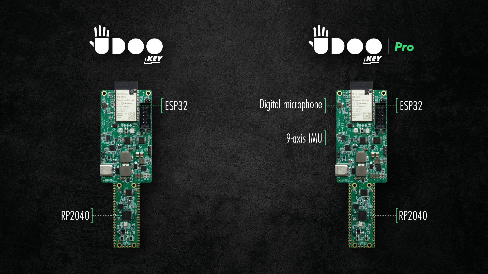

Introduction
UDOO KEY
The UDOO KEY is a fully programmable board combining Raspberry Pi RP2040 microcontroller and ESP32-WROVER-E module from Espressif, coming together into a single, powerful solution of just 130 x 40 x 10.9 mm. UDOO KEY allows you to either use these two MCUs independently or to combine them, exploiting their unique features to realize infinite new applications.
The Pico-compatible part of the UDOO KEY is built upon an RP2040 microcontroller by Raspberry Pi Foundation, dual Arm Cortex-M0+, with a QSPI 8MB Flash, a 133MHz clock and 264KB of on-chip SRAM. It is especially suitable for machine learning, motor control, and audio applications.
The fully programmable ESP32 module, on the other hand, is an ESP32-WROVER-E based on a dual-core Xtensa 32-bit LX6, with a 16MB flash memory and an 8MB PSRAM. The ESP32 on board is also a Wi-Fi, Bluetooth and Bluetooth Low Energy module, thus providing the UDOO KEY with full wireless connectivity.
The two microcontrollers can communicate via serial port or SWD interface. Both can be programmed using different environments, such as TinyML, TensorFlow Lite, MicroPython, C/C++, Arduino IDE, and many more, giving you plenty of options to streamline your AI application. The UDOO KEY is also designed to natively support Clea, the AI platform by SECO Mind for deploying AI models and applications over a fleet of IoT devices through over-the-air updates.
Download the User Manual to have a more complete explanation of the UDOO KEY hardware and features.
Visit the Get Started - ESP32 and IDF, Get Started - ESP32 and Arduino Get Started - RP2040 and MicroPython and Get Started - RP2040 and Arduino sections to learn how to start using your UDOO KEY.
Lineup
The UDOO KEY retail line up consists of two models, which are mainly distinguished by the availability of on-board sensors:
- UDOO KEY Basic
- UDOO KEY Pro

Check the Board Versions section to see the differences between the two.
Moreover, by looking at the following video, you can have a brief overview of the UDOO board and its components.
Technical specifications
Power supply: 5V DC
Dimensions: 130 x 40 x 10.9 mm
Sensors:
- On-chip temperature sensor
- 6-axis IMU motion sensor (only on UDOO KEY Pro)
- Omnidirectional Digital Microphone (only on UDOO KEY Pro)
| Microcontrollers | ESP32 | RP2040 |
|---|---|---|
| Memory size | 8 MB SPI Pseudo static RAM | 264 KB SPI Pseudo static RAM |
| Flash size | 16 MB internal SPI flash | 64 M-bit external QSPI flash |
| Connectivity | Wi-Fi 802.11 b/g/n (802.11n up to 150 Mbps), Bluetooth v4.2 BR/EDR and BLE specification | - |
| Peripherals | UEXT connector (I2C, SPI, UART) | 26 multifunction GPIO pins |
Community
- Official web site: www.udoo.org
- Official forum: www.udoo.org/forum
Forums
The official UDOO forums can be found at www.udoo.org/forum
The forum search facility has been tweaked to allow more general searching. Please do a search before making a post as the issue may already have been raised and answered.
IRC channel
There is an (unofficial) UDOO discussion channel on IRC. Using the IRC client of your choice, use server information: irc.freenode.net. Room name is #udoo.